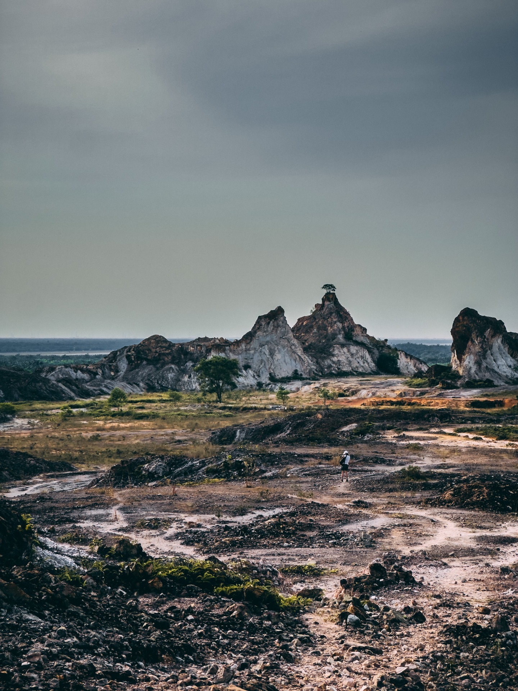
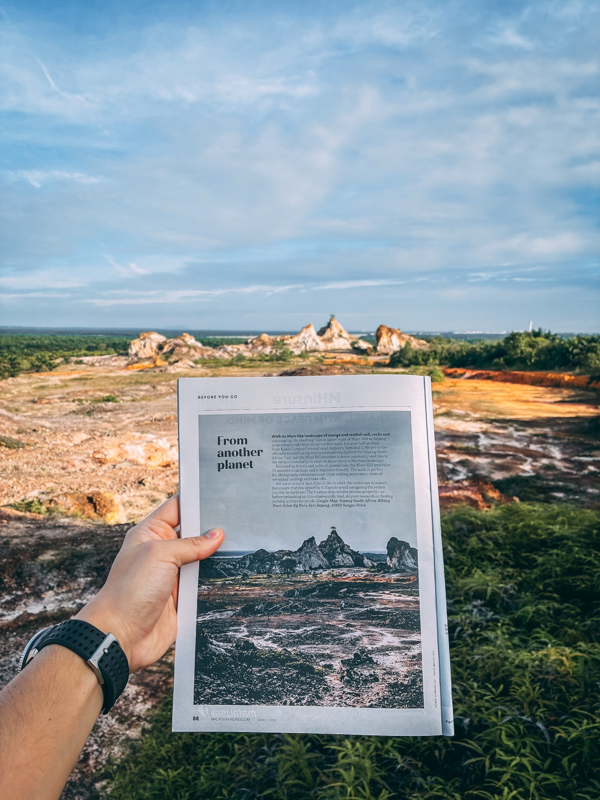
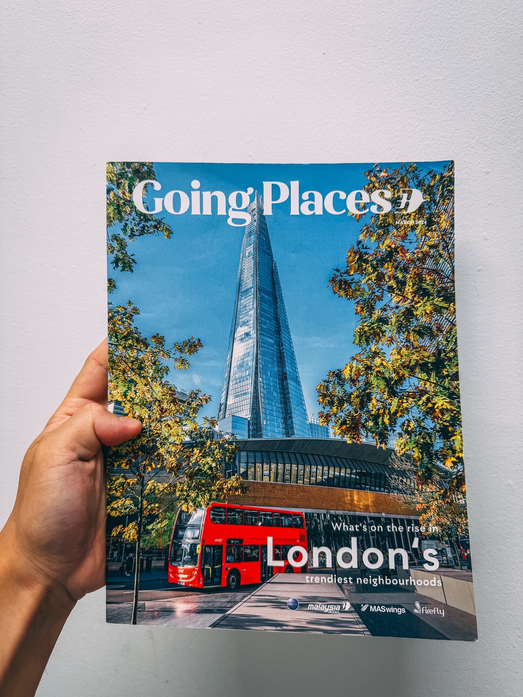
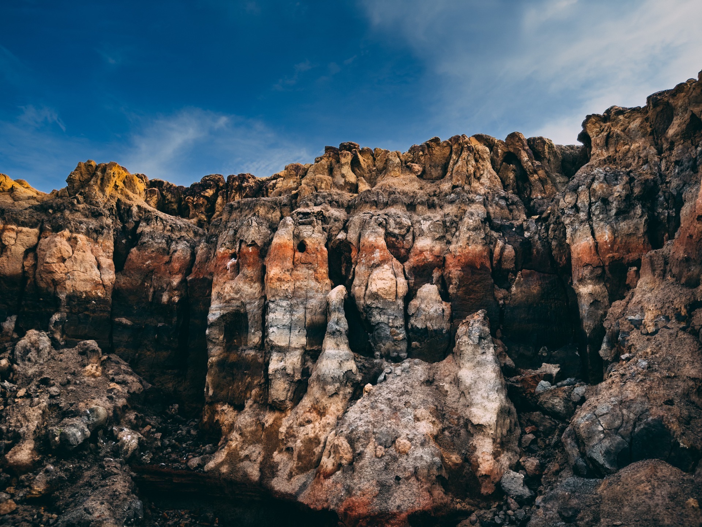
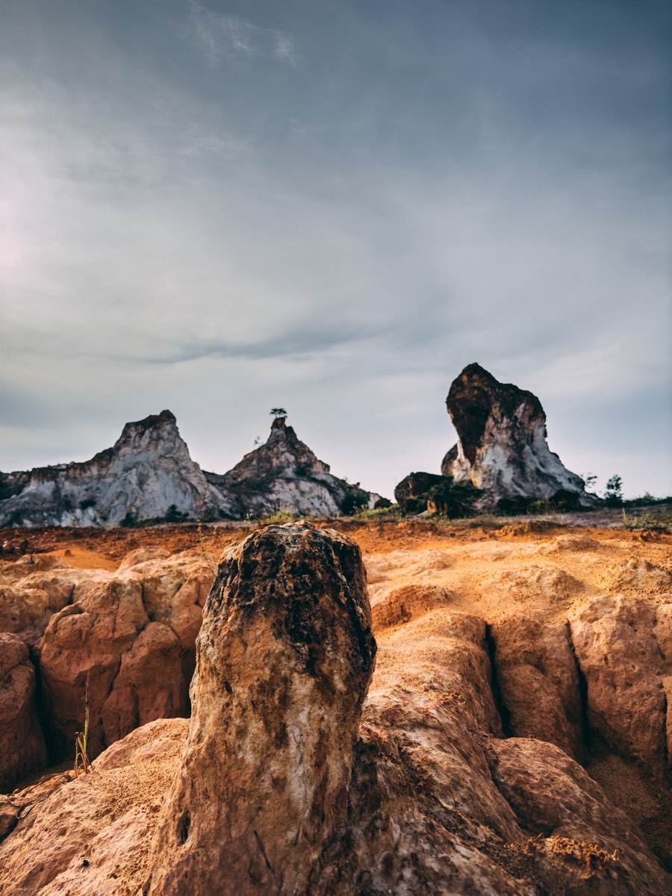
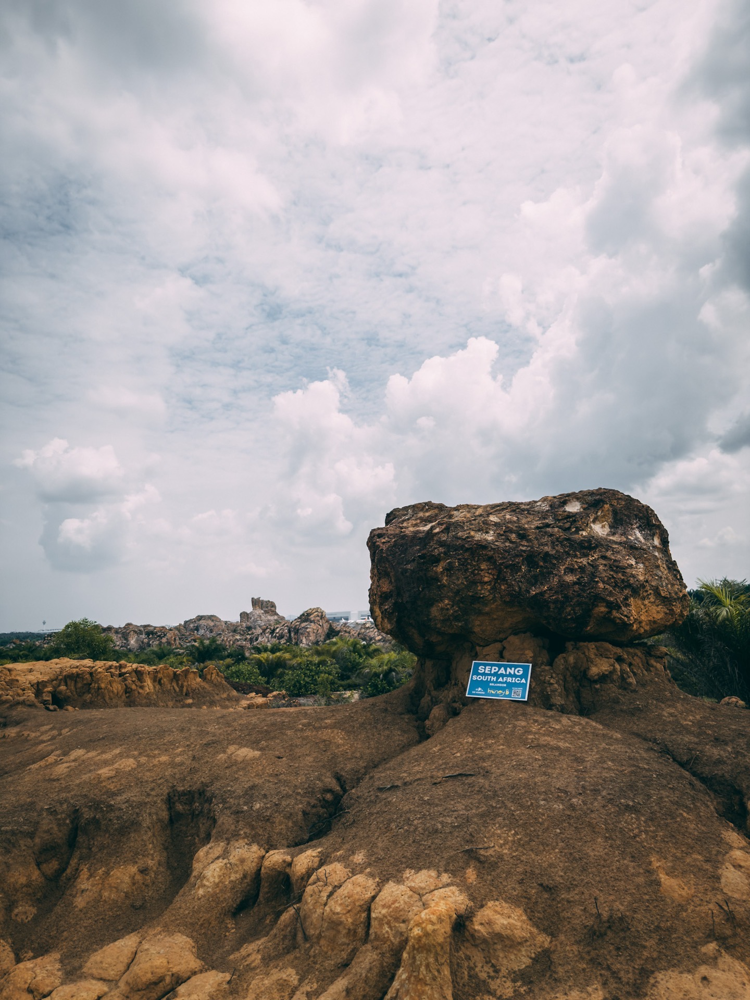

Malaysia Has Its Own Grand Canyon
Most people have no idea this place exists. And that's the wild part — it's not hidden deep in some jungle far from civilization. It's literally right there, next to the main highway, about 30 minutes from KLIA airport.
When you arrive at Sepang South Africa for the first time, your brain genuinely cannot process it. Because the landscape looks like it belongs in Arizona or South Africa — not Selangor, Malaysia.
Red and orange soil. Dramatic rocky formations. Dry, sparse vegetation. The kind of scenery you'd expect to see in a nature documentary about African deserts. But you're standing in Sepang. 30 minutes from the airport. 😂
That's exactly why Malaysian hikers started calling it "Sepang South Africa." Because honestly, what else would you call it?
You drive past this place every day on the highway. Most people never stop. The ones who do? They can't believe it's real.
The Photo That Made It Into Malaysia Airlines Magazine ✈️
One of the photos I took here at Sepang South Africa ended up being featured in the Malaysia Airlines Going Places Magazine — March 2024 Issue.
Honestly, that was a proud moment for me. Not just personally, but for the place itself. A Malaysian hidden gem getting international recognition through the national airline's inflight magazine — the magazine that millions of passengers read while flying in and out of the country.
If you've ever flown Malaysia Airlines and flipped through that magazine, you might have already seen this landscape without knowing it was right here in Sepang 😂



1 of these photos was featured in Malaysia Airlines Going Places Magazine — March 2024 Issue ✈️
This Is NOT South Africa 😂
Let me be very clear — you are NOT in South Africa. You are in Sepang, Selangor, Malaysia. The ERL to KLIA is probably 20 minutes from here lah.
But the nickname "Sepang South Africa" is honestly one of the most accurate inaccurate place names in Malaysia. Because when you're standing in the middle of those red rock formations, the dry air, the orange-tinted soil — you genuinely feel like you've been teleported somewhere else entirely.
The combination of red/orange soil, dramatic rock formations jutting out at all angles, and the sparse dry vegetation creates a landscape that looks nothing like the green jungle Malaysia is known for. It's uniquely alien. Uniquely beautiful. And completely unexpected.
That contrast — this otherworldly landscape existing quietly in the middle of suburban Selangor — is exactly what makes this place so special.

Sepang South Africa — the landscape that earned Malaysia's most misleading place name 🏜️
Easy Trail, Dramatic Scenery 🟢
Unlike most mountains in the 60 Mountains Challenge Malaysia — this one is genuinely, honestly easy. Like, actually easy. Not "easy for experienced hikers" easy. Actually easy for everyone.
The terrain is mostly flat, the distance is short at around 4km, and there are no steep climbs to deal with. You're basically walking through one of the most photogenic landscapes in Malaysia without suffering for it. 😂
This makes Sepang South Africa perfect for:
- Beginners and first-time hikers
- Families with kids
- Tourists who just landed at KLIA and want to explore
- Anyone who wants incredible photos without a 12-hour suffer fest
One thing to note though — some areas have loose soil. It's not slippery enough to be dangerous, but you'll want to wear closed-toe shoes. Sandals and flip flops? Please don't. 😅

30 Minutes From KLIA 🛫
Here's the thing that blows people's minds most about Sepang South Africa — the location.
If you're flying into Kuala Lumpur, or you have a layover, or you're picking someone up from KLIA — this place is genuinely doable. 30 minutes from the airport. No deep jungle. No remote mountain roads. Just drive, park, walk.
How many places in the world can you say: "Yeah I just landed, give me 30 minutes and I'll be standing in a place that looks like the African savannah"? Not many lah.
For the 60 Mountains Challenge, this was Mountain #7 for me. And honestly — it was one of the most rewarding ones to photograph. The light hits differently here. Especially during golden hour when the red soil just glows. 🌅

So Hikers Malaysia at Sepang South Africa 🌿 — Mountain #7 done!